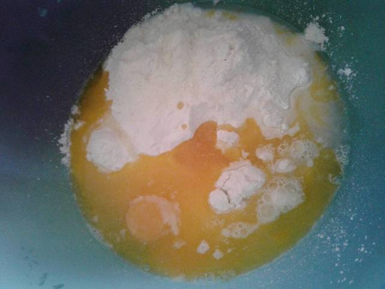
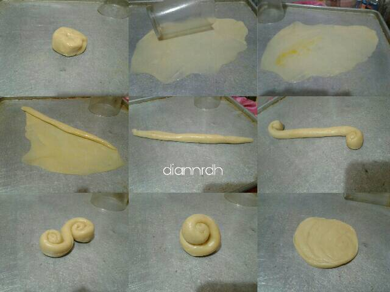

Resep Kue Maryam
(CANAI)
Bahan-Bahan:
- 250 gr tepung terigu
- 1 butit telur
- 3 sdm margarin,lelehkan
- 100 ml air hangat
- 2 sdm susu bubuk (optional)
- 1/2 sdt garam
- margarin leleh untuk olesan
- minyak untuk merendam
Langkah-Langkah
- Campur semua bahan roti jadi satu.

-
Uleni sampai kalis (aku pakai tangan) jangan takut jika adonan lengket
ya, lumuri tangan sesekali dengan tepung (tapi jangan menambahkan tepung).
Uleni terus sampai adonan kalis.

- Kalisnya adonan canai tidak tidak sekalis adonan roti ya, kira-kira seperti ini sudah cukup.

- Bagi adonan menjadi 12 bagian. Kalau mau lebih besar bagi menjadi 10 bagian.

- Lumuri/rendam adonan dengan minyak goreng (supaya adonan tidak kering). Diamkan 1-3 jam (boleh semalaman asal ditutup serbet)
- Setelah direndam minyak, adonan akan lebih lentur daripada kalis sebelumnya, mirip adonan kulit martabak yaaa hehehe :D

- Ambil 1 adonan. Pipihkan melebar setipis mungkin. Olesi dengan margarin cair. Gulung memanjang. Linting berlawanan arah seperti konde. Tumpuk kedua bagian, terakhir pipihkan lagi. Silahkan gambarnya dilihat (urutannya dari kiri ke kanan lalu balik lagi ke arah paling kiri)

- Panaskan teflon dengan api kecil saja. Panggang adonan dengan sekali balik, tekan-tekan supaya matangnya rata. Kalau mau dikasih butter akan lebih gurih canainya.
- Canai siap disajikan. Bisa juga disajikan dengan kuah kari atau topping messes ataupun keju
- Selamat Mencoba :)